PCPG · RNA-seq: contagens brutas (GDC)
STAR - Counts (GENCODE v36) · gerado em 22/10/2026 02:45
48,9 Mtamanho mediano
0,37dispersão mediana α
16.628genes
184amostras tumorais
3amostras normais
0,0%valores faltantes
Fonte: API do GDC (STAR - Counts)
Principais resultados
- Bibliotecas de 23,2 a 94,4 milhões de leituras (mediana 48,9). 41.869 de 60.660 features têm leitura em pelo menos 10% das amostras.
- A variância cresce bem acima da média: a dispersão mediana da binomial negativa é α=0.37 (para features com média > 10). Isso descarta um modelo Poisson e indica binomial negativa (ou Poisson-lognormal) na verossimilhança.
- A fração de zeros é compatível com a binomial negativa (diferença mediana -0,1%); inflação de zeros não parece necessária.
- Em média 22,2% das leituras de cada amostra vão para as 20 features mais abundantes (CHGA, CHGB, MT-CO1).
- Genes codificadores de proteína recebem 97,0% das leituras (mediana).
- 16.628 genes medidos em 187 amostras (184 tumorais e 3 normais); 0,0% dos valores estão faltando.
- Os dois primeiros componentes principais explicam 14,7% e 9,0% da variância das features mais variáveis.
- Correlação mediana entre amostras: 0,62.
- Amostras com correlação muito abaixo das demais (possíveis outliers técnicos): TCGA-P8-A5KD-11, TCGA-TT-A6YO-01, TCGA-SQ-A6I4-11.
- Tumor x normal: 5356 genes diferentes com FDR < 5% (3551 maiores no tumor, 1805 maiores no normal; 3 pacientes têm o par tumor-normal).
- Mais aumentados no tumor: ENSG00000176454.14, ENSG00000105223.20, ENSG00000135314.12, ENSG00000174938.14, ENSG00000135454.14, ENSG00000223396.4, ENSG00000186862.20, ENSG00000182575.8.
- Mais reduzidos no tumor: ENSG00000147465.12, ENSG00000145284.12, ENSG00000164199.18, ENSG00000136999.5, ENSG00000073331.18, ENSG00000100266.19, ENSG00000085662.14, ENSG00000262454.4.
- Associações clínicas com p < 0,05 nos componentes principais: PC1 com idade (p=0.024); PC3 com idade (p=0.0084).
Biblioteca
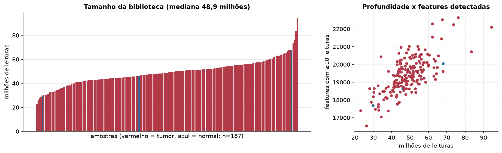
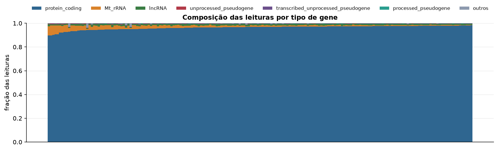
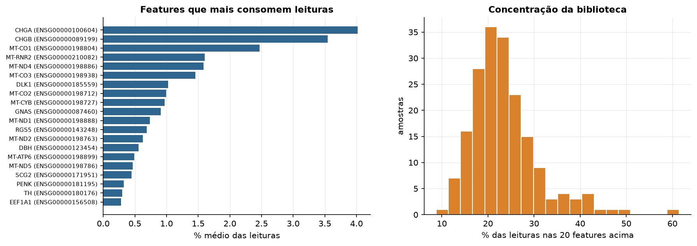
Sobredispersão e zeros
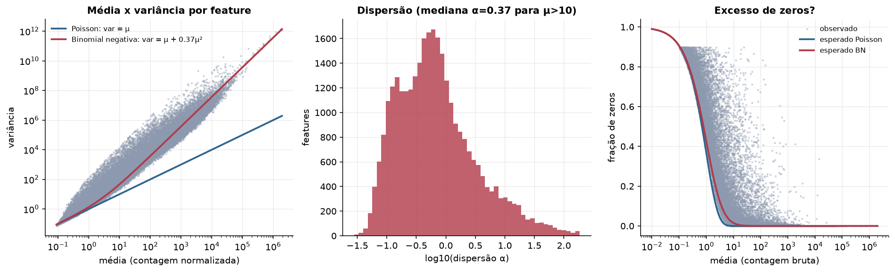
Exploração em log2(CPM+1)
Features com CPM ≥ 1 em pelo menos 20% das amostras (16.628 features).
Distribuição dos valores
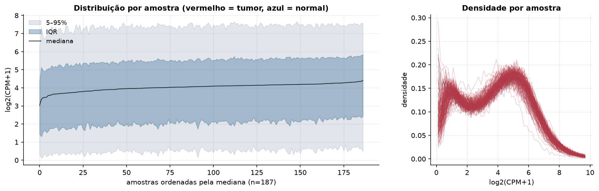
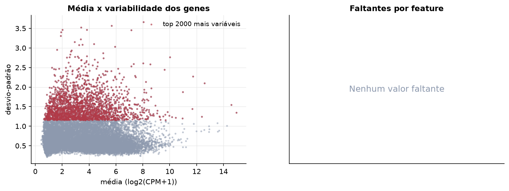
Estrutura das amostras
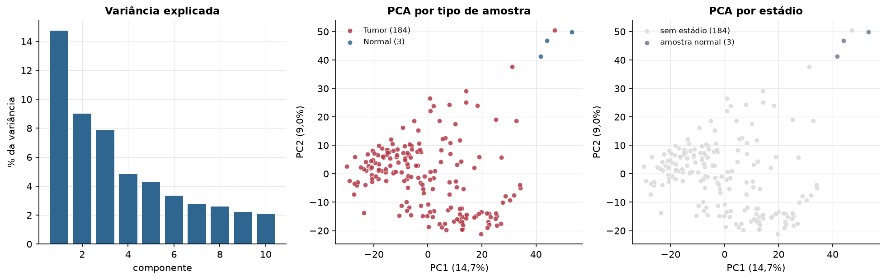
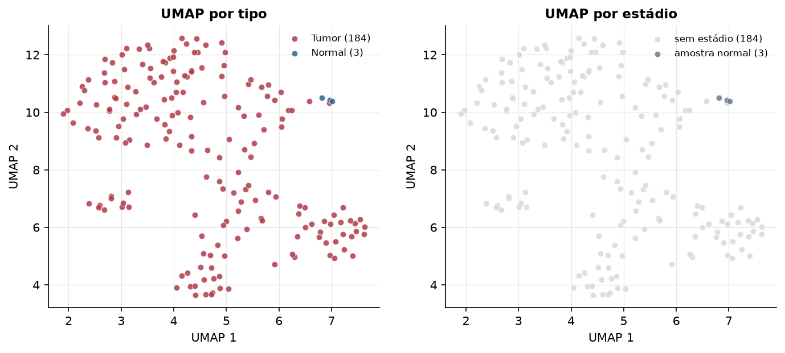
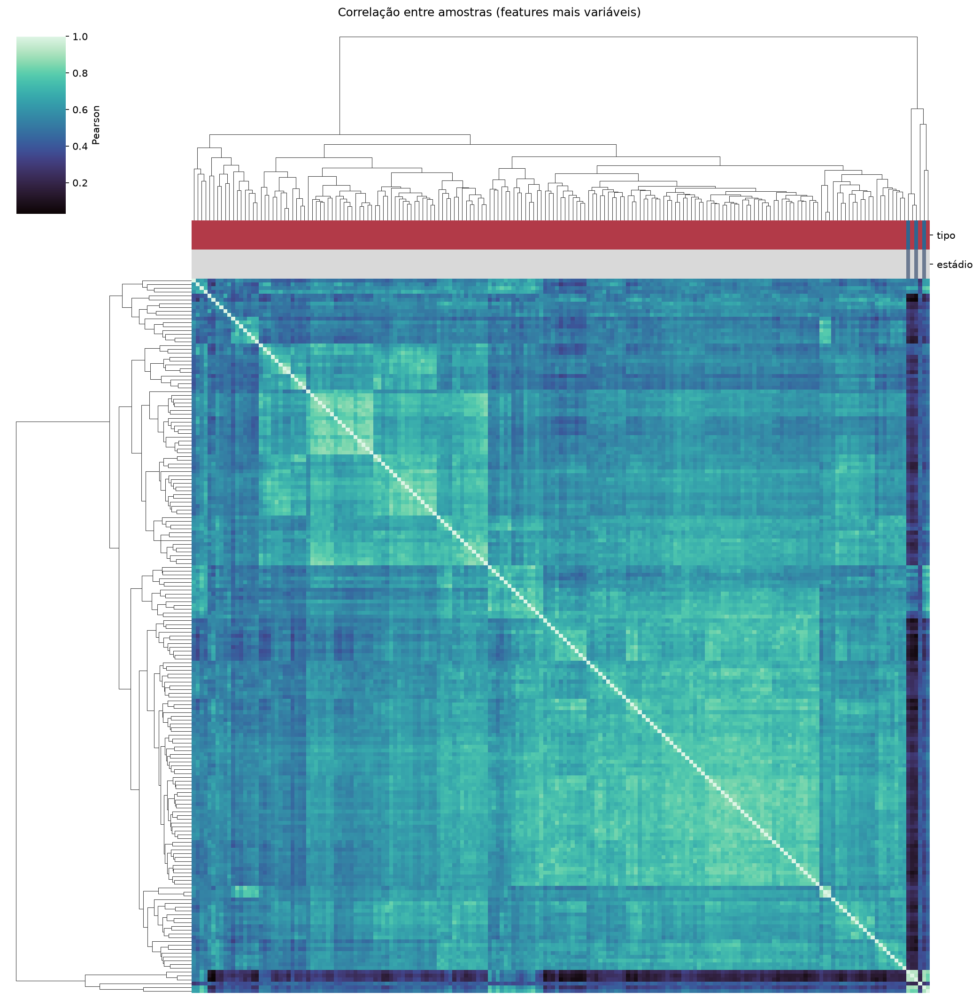
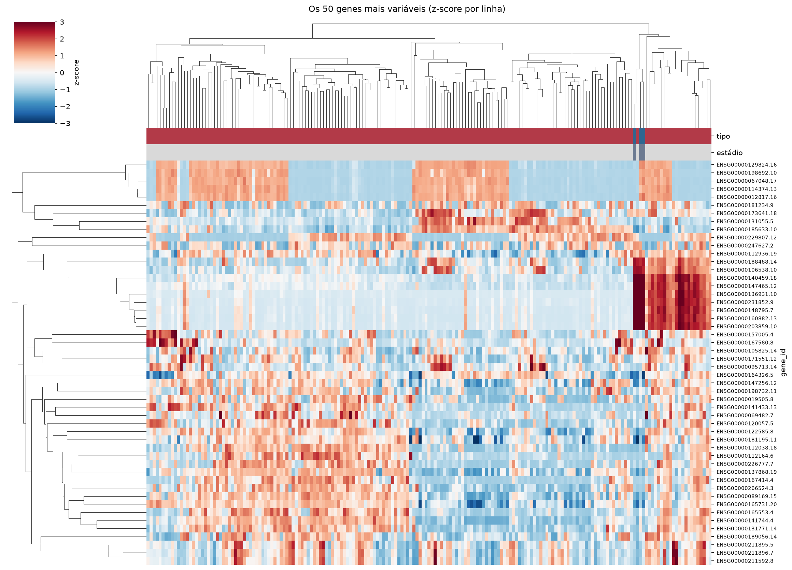
Tumor x normal
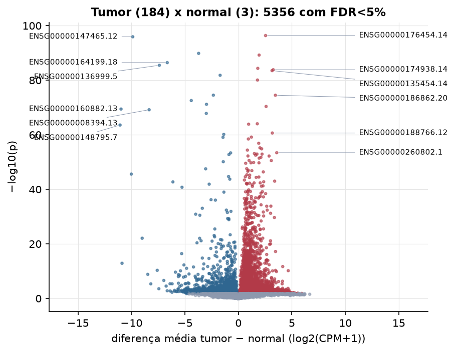
Features mais diferentes entre tumor e normal
| gene_id | diferenca_tumor_menos_normal | t | p | fdr |
|---|---|---|---|---|
| ENSG00000176454.14 | 2.543 | 49.324 | 4.19e-97 | 6.97e-93 |
| ENSG00000147465.12 | -9.877 | -48.522 | 1.19e-96 | 9.85e-93 |
| ENSG00000145284.12 | -3.717 | -38.781 | 1.42e-90 | 7.85e-87 |
| ENSG00000105223.20 | 1.939 | 38.365 | 6.02e-90 | 2.5e-86 |
| ENSG00000164199.18 | -6.654 | -41.045 | 3.5e-87 | 1.16e-83 |
| ENSG00000136999.5 | -7.392 | -42.634 | 3.26e-86 | 9.05e-83 |
| ENSG00000135314.12 | 1.815 | 35.794 | 4.42e-85 | 1.05e-81 |
| ENSG00000174938.14 | 3.26 | 59.368 | 1.44e-84 | 2.99e-81 |
| ENSG00000135454.14 | 3.145 | 35.463 | 3e-84 | 5.54e-81 |
| ENSG00000073331.18 | -1.709 | -36.223 | 1.52e-82 | 2.53e-79 |
| ENSG00000223396.4 | 1.785 | 40.859 | 8.56e-81 | 1.29e-77 |
| ENSG00000100266.19 | -2.341 | -43.386 | 3.04e-75 | 4.01e-72 |
| ENSG00000186862.20 | 3.46 | 43.225 | 3.13e-75 | 4.01e-72 |
| ENSG00000085662.14 | -4.407 | -57.023 | 2.77e-73 | 3.29e-70 |
| ENSG00000262454.4 | -2.983 | -41.891 | 6.67e-72 | 7.39e-69 |
| ENSG00000182575.8 | 2.591 | 30.185 | 4.11e-71 | 4.27e-68 |
| ENSG00000160882.13 | -10.974 | -44.095 | 3.76e-70 | 3.68e-67 |
| ENSG00000008394.13 | -8.348 | -47.654 | 6.58e-70 | 6.08e-67 |
| ENSG00000185561.10 | -3.003 | -40.067 | 1.49e-68 | 1.3e-65 |
| ENSG00000264589.4 | 1.767 | 28.402 | 9.24e-65 | 7.69e-62 |
| ENSG00000184271.17 | 0.956 | 27.099 | 1.31e-64 | 1.04e-61 |
| ENSG00000148795.7 | -11.065 | -46.593 | 2.7e-64 | 2.04e-61 |
| ENSG00000188766.12 | 3.173 | 33.98 | 2.25e-61 | 1.63e-58 |
| ENSG00000123472.12 | -1.368 | -32.79 | 7.03e-61 | 4.87e-58 |
| ENSG00000250467.1 | 1.215 | 25.088 | 7.22e-60 | 4.8e-57 |
| ENSG00000176406.23 | -1.439 | -24.761 | 8.82e-60 | 5.64e-57 |
| ENSG00000215589.3 | 0.933 | 24.326 | 3.5e-59 | 2.15e-56 |
| ENSG00000145087.13 | 1.902 | 26.596 | 1.31e-57 | 7.78e-55 |
| ENSG00000256481.1 | 2.016 | 26.829 | 6.01e-56 | 3.45e-53 |
| ENSG00000150627.16 | 2.172 | 34.27 | 1.43e-55 | 7.92e-53 |
Associação com variáveis clínicas
p-valores da associação dos três primeiros componentes principais (só tumores) com estádio (Kruskal-Wallis), sexo (Mann-Whitney), idade (Spearman) e sobrevida global (Cox univariado).
| estádio (Kruskal) | sexo (Mann-Whitney) | idade (Spearman) | sobrevida OS (Cox) | |
|---|---|---|---|---|
| PC1 (14,2%) | 0.11 | 0.024 | 0.795 | |
| PC2 (8,7%) | 0.489 | 0.297 | 0.051 | |
| PC3 (6,6%) | 0.661 | 0.008 | 0.585 |